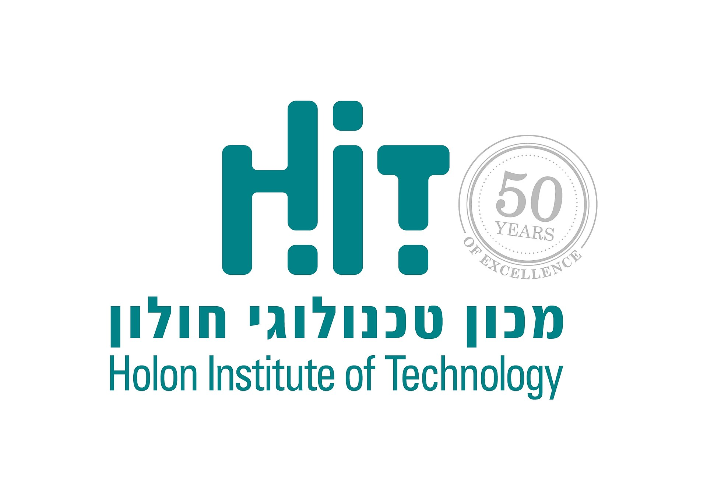

אודות הפרויקט: FocusPLUS
האתר FocusPLUS הוקם כדי לספק לסטודנטים כלים פרקטיים להתמודדות עם אתגרים אקדמיים נפוצים, כגון דחיינות, הסחות דעת וניהול לחצים.
מטרת האתר היא להנגיש מידע מבוסס מחקר בדרך פשוטה ויעילה שתעזור למשתמשים לשפר את יכולות הריכוז והפרודוקטיביות שלהם במהלך הלימודים.
במסגרת פרויקט לקורס פיתוח אתרי אינטרנט בשנה א', תשפ"ו.

הפקולטה לטכנולוגיות למידה
הצהרת פרויקט
עיצוב. נגישות.
חוויית משתמש.
הפרויקט משלב עיצוב מודרני עם חוויית משתמש נגישה ונוחה לסטודנטים.
האתר פותח ב־HTML5 ו־CSS3 תוך דגש על UI/UX, קריאות גבוהה, צבעוניות נעימה וניווט פשוט.
השפה הוויזואלית משלבת אווירה אקדמית צעירה עם עיצוב יצירתי, ברור ונגיש לכל משתמש.